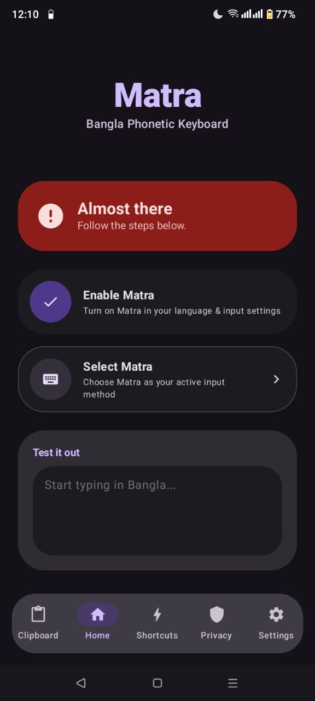
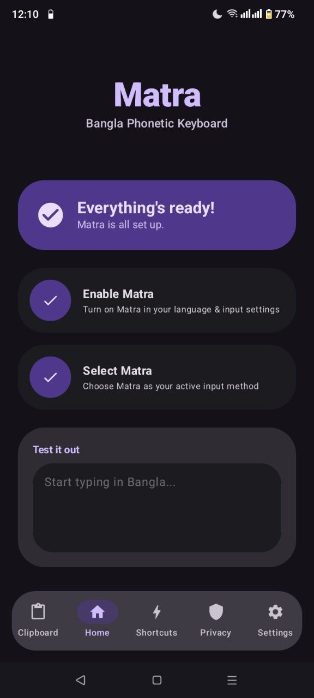
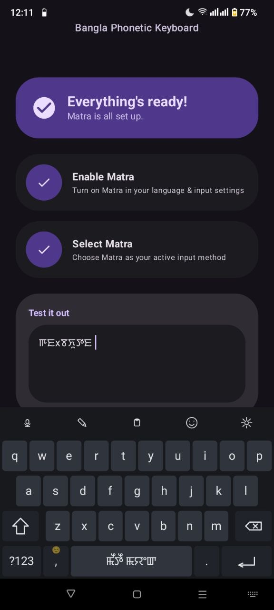
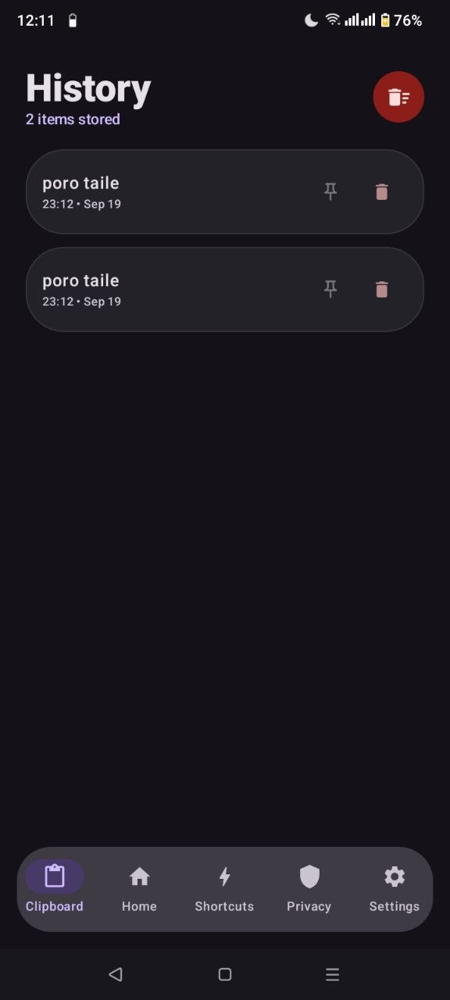
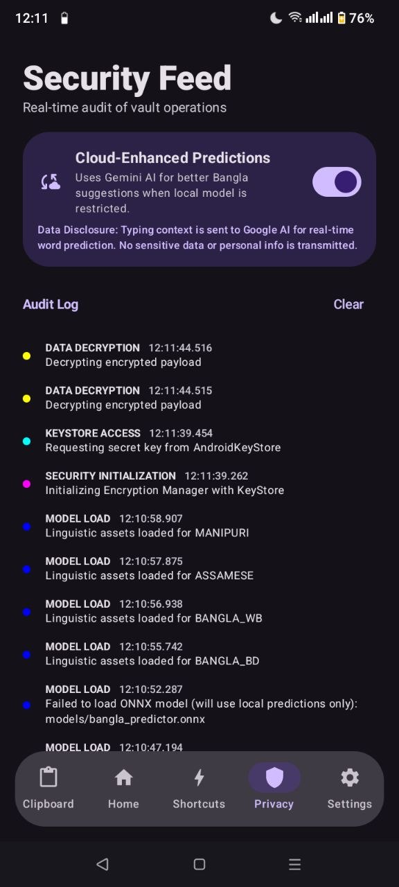
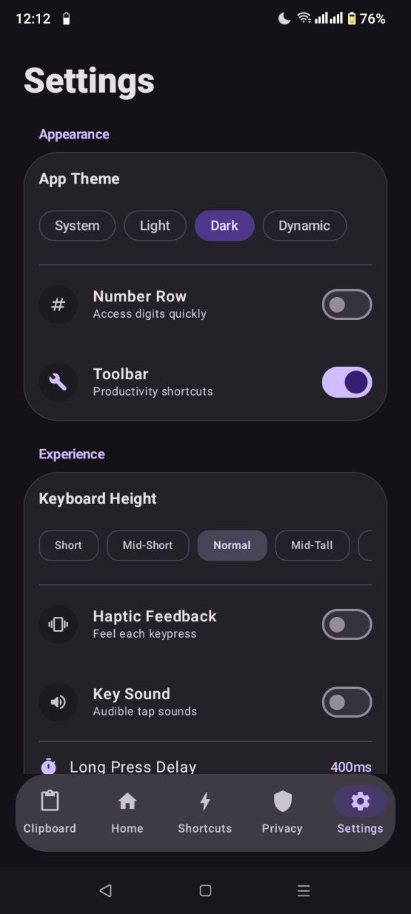

Input friction
Roman-letter typing needs to become fluent native-script text, including conjuncts and regional spellings.
MATRA IME · ANDROID
মাত্রা
A phonetic keyboard built around language, control, and privacy.
01 — 1201 / THE CONTEXT
For many people, writing in their language starts with a compromise: input friction, limited linguistic flexibility, or uncertainty about what happens to their data.
Roman-letter typing needs to become fluent native-script text, including conjuncts and regional spellings.
Word choices and spelling conventions can differ across Bangla-speaking communities.
Useful suggestions should not require users to surrender control over what they type.
02 / THE PROJECT
.png)
A Bangla phonetic Input Method Engine for Android, designed to bring language input, prediction, and sensitive text handling into one coherent ecosystem.



Greedy character matching maps Latin keystrokes to Bangla graphemes and conjunct clusters.
INPUT ENGINEUser-defined triggers expand into longer text, directly in the typing flow.
TEXT EXPANSIONContinuous touch paths are evaluated against key positions to trace words.
GESTURE INPUTLocal language processing and a protected clipboard vault form the foundation. Optional cloud assistance is a separate, user-controlled path.
03 / LANGUAGE COVERAGE
The report describes support profiles for multiple language and script communities, with dialect-aware rules rather than a single fixed dictionary.
পানি
pani → পানি
Select a profile to preview its sample.
পানি
BANGLA_BDজল
BANGLA_WBঅসমীয়া
ASSAMESE PROFILE𑄛𑄚𑄨
CHAKMA_PROFILEꯏꯁꯤꯡ
MEITEI_MAYEKꠙꠣꠘꠤ
SYLHETI_PROFILE04 / TRANSLITERATION
A greedy matching cascade evaluates prefixes from longer sequences down to shorter matches to compose complex graphemes.
Latin keystrokes
Prefix evaluation
Illustrative output
05 / DATA & TRUST
The report describes a local-first model with encrypted clipboard storage, sensitive-record expiry, and optional cloud prediction.
Report describes AES-GCM-256 encryption and a key protected through Android KeyStore.
Detected sensitive entries are assigned a reported 60-second time-to-live purge path.
Gemini prediction is described as user-toggled. It should be presented distinctly from the default local-first path.



06 / ENGINEERING
The reported Android architecture separates presentation, engine logic, and data/security responsibilities.
Select a layer to inspect its responsibility.
07 / IMPLEMENTATION DETAILS
The report describes several implementation choices intended to keep keyboard interaction responsive while storage and prediction work happen.
Coroutines separate settings, service, and storage work from immediate keyboard rendering.
The report states a sub-15 ms target for quantized ONNX prediction; no benchmark evidence is included in the supplied report.
Static pre-allocation of the phonetic composer buffer is described as a way to reduce garbage-collection spikes.
08 / VALIDATION
The supplied report explains architecture and intended behavior, but does not provide a verified benchmark suite or measured results. This chapter makes that evidence gap visible.
09 / WHAT COMES NEXT
A credible roadmap turns architectural intent into evidence, safeguards, and user-tested behavior.
Build a representative corpus for Bangla, regional profiles, conjuncts, and the additional script profiles. Review outputs with fluent speakers.
Publish reproducible latency, memory, and battery measurements across the supported device range.
Document default network behavior, cloud-consent boundaries, diagnostics, key handling, and sensitive-data deletion tests.
Evaluate onboarding, accessibility, regional vocabulary controls, and keyboard ergonomics with users.
10 / THE BIGGER PICTURE
Matra brings together phonetic input, regional language profiles, local prediction, and sensitive clipboard handling in one Android project.
LANGUAGE · AGENCY · PRIVACYMATRA IME
মাত্রা
An ongoing effort to make language input more natural, more adaptable, and more deliberate about privacy.